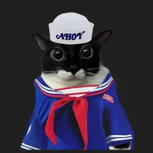

Axel Fischbein

"Cuando estas agotado y a punto de rendirte, es cuando
comienza el verdadero desafio"

Me llamo Axel Fischbein. Nací el 10 de agosto de 2001. Tengo 24 años. Vivo en CABA, Argentina. Soy Programador Frontend Universitario en la UADE. Me gustan los gatos, los videojuegos y la música.